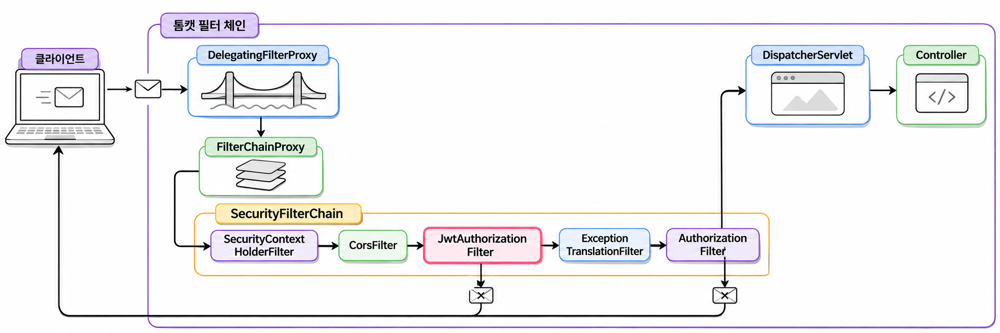
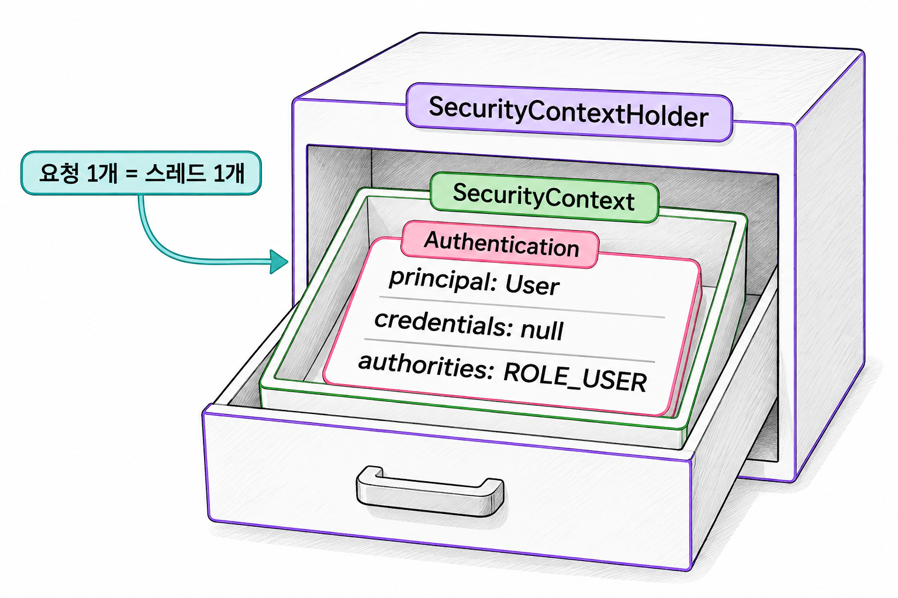
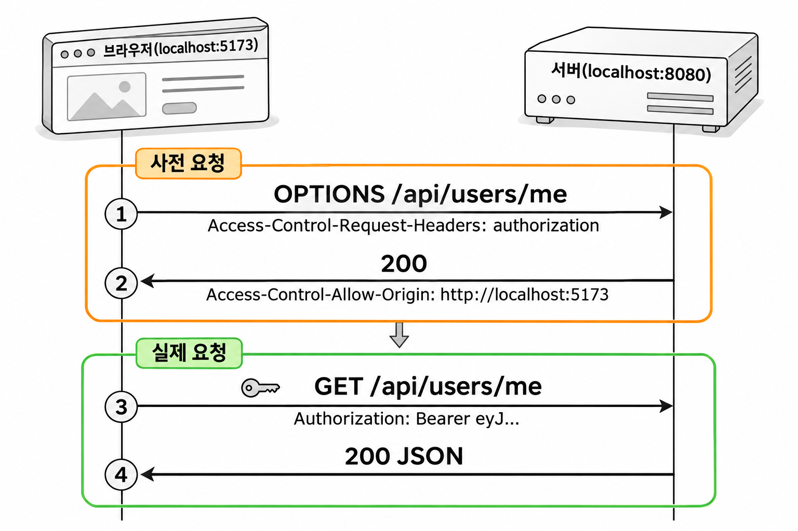
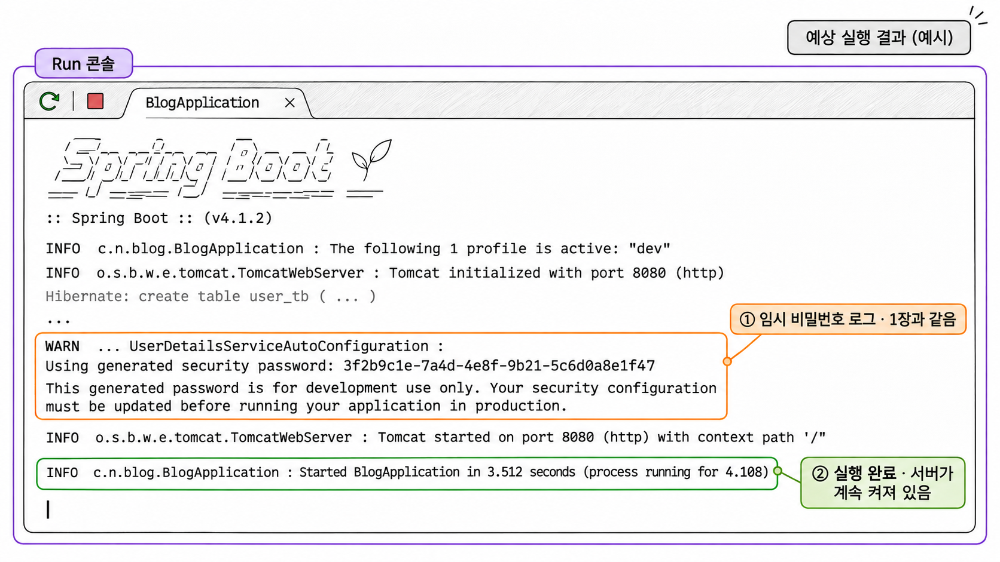

5장. 스프링 시큐리티와 JWT 필터 만들기
1. 스프링 시큐리티의 동작 원리
1.1 인증과 인가(401과 403)
스프링 시큐리티(Spring Security)는 요청이 컨트롤러에 도착하기 전에 여러 필터를 거치게 해서 보안 검사를 맡는 프레임워크입니다. 검사는 요청의 입구에서 한 번만 합니다. 그래서 SSR 게시판처럼 컨트롤러 메서드마다 로그인 여부를 확인하는 코드를 넣을 필요가 없습니다.
보안 검사는 두 가지입니다. 인증(Authentication)은 요청을 보낸 사람이 누구인지 확인합니다. 인가(Authorization)는 확인된 사람에게 이 기능을 쓸 권한이 있는지 판단합니다. 누구인지 알아야 권한을 따질 수 있으므로 인가는 항상 인증 뒤에 옵니다.
| 구분 | 확인하는 것 | 실패할 때 상태 코드 | 이 프로젝트의 예 |
|---|---|---|---|
| 인증 | 누구인가? | 401 Unauthorized | 토큰 없이 /api/users/me 요청 |
| 인가 | 이 기능을 써도 되는가? | 403 Forbidden | USER 토큰으로 /api/admin/hello 요청 |
401의 이름은 Unauthorized지만 실제 뜻은 "인증되지 않음"입니다. 이름 때문에 403과 헷갈린다면 기준 하나만 기억합니다. 서버가 요청한 사람을 모르면 401, 누구인지는 알지만 허락하지 않으면 403입니다.
1.2 필터 체인과 실행 순서
필터(Filter)는 요청이 서블릿에 닿기 전에 요청을 검사하거나 바꾸는 객체입니다. 스프링 MVC에서 이 서블릿은 DispatcherServlet입니다. 필터는 여러 개가 한 줄로 이어지는데, 이 줄을 필터 체인(filter chain)이라고 합니다. 각 필터는 자기 일을 마치면 다음 필터에 요청을 넘기고, 넘기지 않으면 요청은 그 자리에서 끝납니다.
톰캣의 필터 체인에 스프링 시큐리티가 등록하는 필터는 DelegatingFilterProxy 하나뿐입니다. 톰캣은 스프링 빈을 모르기 때문에 이 필터가 톰캣과 스프링 컨테이너 사이를 잇습니다. DelegatingFilterProxy는 요청을 스프링 빈인 FilterChainProxy에 넘깁니다. FilterChainProxy는 개발자가 정의한 SecurityFilterChain 안의 보안 필터들을 순서대로 실행합니다. 6장에서 만들 SecurityConfig가 이 SecurityFilterChain을 정의합니다.

그림 5-1에서 보듯 보안 필터는 모두 DispatcherServlet 앞에 있습니다. 그래서 인증이나 인가에 실패한 요청은 컨트롤러 코드를 한 줄도 실행하지 않고 돌아갑니다.
SecurityFilterChain 안의 필터는 순서가 정해져 있습니다. 실제로는 필터가 더 많지만, 이 프로젝트에서 알아야 할 필터만 순서대로 추리면 다음과 같습니다.
| 순서 | 필터 | 하는 일 |
|---|---|---|
| 1 | SecurityContextHolderFilter | 이번 요청의 인증 정보 보관소를 준비하고, 요청이 끝나면 비운다 |
| 2 | HeaderWriterFilter | 보안 관련 응답 헤더(X-Frame-Options 등)를 붙인다 |
| 3 | CorsFilter | CORS 요청을 검사한다 |
| 4 | CsrfFilter | CSRF 토큰을 검사한다(이 프로젝트는 끈다) |
| 5 | LogoutFilter | 로그아웃 요청을 처리한다 |
| 6 | JwtAuthorizationFilter | 직접 만드는 필터. 토큰을 검증해 인증 정보를 넣는다 |
| 7 | UsernamePasswordAuthenticationFilter | 폼 로그인을 처리한다(이 프로젝트는 끄고, 끼워 넣을 위치의 기준으로만 쓴다) |
| 8 | AnonymousAuthenticationFilter | 인증 정보가 비어 있으면 익명 사용자로 채운다 |
| 9 | ExceptionTranslationFilter | 뒤에서 발생한 인증 · 인가 예외를 401 · 403 응답으로 바꾼다 |
| 10 | AuthorizationFilter | URL 규칙에 따라 통과와 거부를 최종 결정한다 |
이 표에서 두 가지를 기억해 둡니다. 첫째, JwtAuthorizationFilter는 반드시 AuthorizationFilter보다 앞에 와야 합니다. 토큰으로 사용자를 먼저 표시해 둬야 마지막 필터가 들여보낼지 판단할 수 있습니다. 6장에서 이 필터를 UsernamePasswordAuthenticationFilter 앞에 넣는 것도 이 때문입니다. 둘째, 401 · 403 응답은 ExceptionTranslationFilter가 만듭니다. 바로 뒤에 있는 AuthorizationFilter가 거부 예외를 던지면 이 필터가 받아서 응답으로 바꿉니다.
1.3 Filter와 AOP 비교
필터와 AOP는 여러 곳에 흩어질 공통 처리를 한곳에 모은다는 점은 같습니다. 차이는 실행 위치와 관리 주체에 있습니다.
| 구분 | Filter | AOP |
|---|---|---|
| 실행 위치 | DispatcherServlet 앞 | 스프링 빈(컨트롤러 · 서비스) 메서드의 앞뒤 |
| 관리 주체 | 서블릿 컨테이너(톰캣) | 스프링 컨테이너 |
| 다루는 대상 | HTTP 요청 · 응답 전체 | 메서드 호출, 인자, 반환값 |
| 주 용도 | 인증, CORS, 인코딩, 요청 로깅 | 트랜잭션, 메서드 단위 로깅 |
| 이 책의 예 | JwtAuthorizationFilter | @Transactional |
인증을 필터에 두는 이유는 실행 위치 때문입니다. 필터는 요청이 스프링 MVC에 들어가기 전에 실행되므로 컨트롤러뿐 아니라 정적 파일이나 H2 콘솔 같은 경로도 같은 규칙으로 막습니다. AOP는 스프링 빈의 메서드가 호출될 때만 끼어듭니다. 이미 컨트롤러까지 들어온 요청만 다룰 수 있어서 입구 검사에는 맞지 않습니다.
2. JwtProvider 만들기
3장의 JwtUtil은 HTTP도 시큐리티도 모르는 순수 자바 클래스입니다. 토큰 문자열을 받아 User를 돌려주는 일만 합니다. 시큐리티 필터가 이 클래스를 쓰려면 두 가지 일이 더 필요합니다. HTTP 요청에서 토큰을 꺼내는 일, 그리고 복원한 사용자를 시큐리티가 읽는 객체로 바꾸는 일입니다. JwtProvider는 이 두 일을 맡아 HTTP 요청, 시큐리티, JwtUtil을 연결합니다.
| 메서드 | 받는 것 | 돌려주는 것 |
|---|---|---|
resolveToken() | HTTP 요청 | "Bearer "를 뗀 토큰 문자열(없으면 null) |
getAuthentication() | 토큰 문자열 | 인증 객체 Authentication(검증 실패면 null) |
2.1 Authentication 객체
Authentication은 이번 요청을 보낸 사용자가 누구이고 어떤 권한이 있는지 담는 스프링 시큐리티의 인터페이스입니다. 시큐리티의 필터와 접근 규칙은 개발자가 만든 User 클래스를 직접 읽지 않습니다. 이 Authentication 객체만 읽습니다.
| 구성 요소 | 담는 것 | 이 프로젝트에서 넣는 값 |
|---|---|---|
| principal | 사용자 자신 | 토큰에서 복원한 User 객체 |
| credentials | 비밀번호 같은 증명 수단 | null(토큰 검증으로 이미 증명함) |
| authorities | 권한 목록 | user.getAuthorities()(ROLE_USER, ROLE_ADMIN 등) |
인터페이스이므로 실제 객체는 구현 클래스로 만듭니다. 아이디 · 비밀번호 로그인에서 쓰는 UsernamePasswordAuthenticationToken을 그대로 씁니다. 이름에 Password가 들어 있지만 사용자와 권한을 담는 클래스이므로 JWT 방식에서도 문제없이 쓸 수 있습니다.
기본 문법
Authentication 변수명 = new UsernamePasswordAuthenticationToken(사용자객체, 증명수단, 권한목록);세 인자 생성자는 인증이 끝난 객체를 만듭니다. 권한 목록이 없는 두 인자 생성자는 아직 인증되지 않은 객체를 만들기 때문에 접근 규칙이 인증된 사용자로 인정하지 않습니다. 이 객체는 토큰 검증을 통과한 다음에 만들므로 세 인자 생성자를 씁니다.
2장에서 User가 UserDetails를 구현하고 getAuthorities()가 "ROLE_" 접두사를 붙이게 만든 것이 이 자리에서 쓰입니다. User를 그대로 principal에, 그 권한 목록을 그대로 authorities에 넣으면 됩니다.
2.2 헤더에서 토큰 꺼내기 resolveToken()
클라이언트는 토큰을 Authorization 헤더에 담아 Bearer eyJ... 모양으로 보냅니다. resolveToken()은 이 헤더를 읽고 "Bearer "로 시작할 때만 접두사 뒤의 토큰 문자열을 잘라 돌려줍니다. 헤더가 없거나 Basic 같은 다른 방식이면 null을 돌려주고, 필터는 이를 토큰이 없는 요청으로 처리합니다.
헤더 이름과 접두사는 3장 JwtUtil의 상수 HEADER("Authorization")와 TOKEN_PREFIX("Bearer ")를 씁니다. 토큰을 만드는 create()와 꺼내는 resolveToken()이 같은 상수를 써야 접두사 끝의 공백 하나가 어긋나는 실수가 생기지 않습니다.
2.3 인증 객체 만들기 getAuthentication()
getAuthentication()은 토큰을 JwtUtil.verify()로 검증하고, 통과하면 복원한 User를 Authentication에 담아 돌려줍니다. 형식이 틀리거나 서명이 맞지 않거나 만료된 토큰이면 verify()가 JWTVerificationException을 던집니다. getAuthentication()은 이 예외를 잡아 null을 돌려줍니다. 예외를 밖으로 던지지 않는 이유는 3.3에서 설명합니다.
예제 5-1 — JwtProvider 만들기
이어서: 예제 4-4
파일명: src/main/java/com/newtenco/blog/core/util/JwtProvider.java
package com.newtenco.blog.core.util;
import com.auth0.jwt.exceptions.JWTVerificationException;
import com.newtenco.blog.user.User;
import jakarta.servlet.http.HttpServletRequest;
import org.springframework.security.authentication.UsernamePasswordAuthenticationToken;
import org.springframework.security.core.Authentication;
import org.springframework.stereotype.Component;
/**
* HTTP 요청 · 시큐리티 · JwtUtil 을 연결한다.
* 요청 헤더에서 토큰을 꺼내고, 검증한 뒤, 시큐리티가 읽는 인증 객체로 바꾼다.
*/
@Component
public class JwtProvider {
// "Authorization: Bearer eyJ..." 에서 "Bearer " 뒤의 토큰만 꺼낸다
public String resolveToken(HttpServletRequest request) {
String bearerToken = request.getHeader(JwtUtil.HEADER);
if (bearerToken != null && bearerToken.startsWith(JwtUtil.TOKEN_PREFIX)) {
return bearerToken.substring(JwtUtil.TOKEN_PREFIX.length());
}
return null;
}
// 검증에 성공하면 Authentication, 형식 오류 · 위조 · 만료면 null
public Authentication getAuthentication(String token) {
try {
User user = JwtUtil.verify(token);
return new UsernamePasswordAuthenticationToken(user, null, user.getAuthorities());
} catch (JWTVerificationException e) {
return null;
}
}
}@Component를 붙였으므로 JwtProvider는 스프링 빈이 되고, 다음 절의 필터가 이 빈을 받아 씁니다. 여기서 principal로 들어가는 User는 DB에서 조회한 객체가 아닙니다. 토큰 안의 id · username · roles로만 복원했기 때문에 비밀번호가 비어 있습니다. 이 차이는 8장에서 내 정보를 조회할 때 다시 다룹니다.
3. JwtAuthorizationFilter 만들기
3.1 OncePerRequestFilter
OncePerRequestFilter는 한 요청에서 필터가 한 번만 실행되도록 보장하는 스프링의 추상 클래스입니다. 서블릿에서는 요청 하나가 내부에서 다른 경로로 전달(forward)되거나 오류 처리 경로로 다시 들어갈 수 있습니다. 일반 필터는 이때마다 다시 실행됩니다. 같은 요청의 토큰을 두 번 검증할 이유가 없으므로 JWT 필터는 이 클래스를 상속합니다.
기본 문법
public class 필터이름 extends OncePerRequestFilter {
@Override
protected void doFilterInternal(HttpServletRequest request, HttpServletResponse response, FilterChain filterChain)
throws ServletException, IOException {
// 요청 검사
filterChain.doFilter(request, response); // 다음 필터로 넘긴다
}
}검사 코드는 doFilterInternal() 안에 씁니다. 마지막 줄의 filterChain.doFilter()가 요청을 다음 필터로 넘깁니다. 이 줄을 빠뜨리면 요청이 필터에서 멈춰 컨트롤러에 가지 못하고, 클라이언트는 빈 응답을 받습니다.
3.2 SecurityContextHolder에 인증 정보 넣기
SecurityContextHolder는 현재 요청의 인증 정보를 보관하는 곳입니다. 안에 SecurityContext가 있고, 그 안에 2절의 Authentication이 들어갑니다. 기본 설정에서는 스레드마다 값을 따로 두는 ThreadLocal에 보관합니다. 요청 하나는 스레드 하나가 처리하므로 동시에 들어온 다른 사용자의 인증 정보와 섞이지 않습니다.

그림 5-2의 구조에 인증 정보를 넣을 때는 세 단계를 거칩니다. 빈 SecurityContext를 새로 만들고, 그 안에 Authentication을 넣고, 이 컨텍스트를 SecurityContextHolder에 등록합니다. SecurityContextHolder.getContext().setAuthentication()으로 기존 컨텍스트를 고쳐도 동작은 합니다. 그래도 스프링 시큐리티 공식 문서는 새 컨텍스트를 만드는 방식을 권합니다. 같은 컨텍스트를 여러 스레드가 함께 고치면서 생기는 경쟁 상태를 피할 수 있기 때문입니다.
넣은 인증 정보는 이번 요청이 끝날 때까지만 유지됩니다. 요청이 끝나면 SecurityContextHolderFilter가 보관소를 비웁니다. 세션에도 저장하지 않으므로 다음 요청이 오면 토큰을 다시 검증해서 다시 넣습니다. 3장에서 본 Stateless(무상태)가 코드에서는 이렇게 나타납니다.
예제 5-2 — JwtAuthorizationFilter 만들기
이어서: 예제 5-1
파일명: src/main/java/com/newtenco/blog/core/filter/JwtAuthorizationFilter.java
package com.newtenco.blog.core.filter;
import com.newtenco.blog.core.util.JwtProvider;
import jakarta.servlet.FilterChain;
import jakarta.servlet.ServletException;
import jakarta.servlet.http.HttpServletRequest;
import jakarta.servlet.http.HttpServletResponse;
import lombok.RequiredArgsConstructor;
import org.springframework.security.core.Authentication;
import org.springframework.security.core.context.SecurityContext;
import org.springframework.security.core.context.SecurityContextHolder;
import org.springframework.web.filter.OncePerRequestFilter;
import java.io.IOException;
/**
* 요청마다 한 번 실행되는 JWT 필터.
* 토큰이 유효하면 이번 요청 동안만 SecurityContextHolder 에 인증 정보를 넣는다.
* 토큰이 없거나 틀려도 여기서 막지 않는다. 막을지는 SecurityConfig 의 URL 규칙이 정한다.
*/
@RequiredArgsConstructor
public class JwtAuthorizationFilter extends OncePerRequestFilter {
private final JwtProvider jwtProvider;
@Override
protected void doFilterInternal(HttpServletRequest request, HttpServletResponse response, FilterChain filterChain)
throws ServletException, IOException {
String token = jwtProvider.resolveToken(request);
if (token != null) {
Authentication authentication = jwtProvider.getAuthentication(token);
if (authentication != null) {
SecurityContext context = SecurityContextHolder.createEmptyContext();
context.setAuthentication(authentication);
SecurityContextHolder.setContext(context);
}
}
filterChain.doFilter(request, response);
}
}토큰이 있고 검증까지 통과했을 때만 인증 정보를 넣습니다. 어느 경우든 마지막 줄에서 다음 필터로 요청을 넘깁니다.
JwtProvider와 달리 이 필터에는 @Component를 붙이지 않았습니다. 스프링부트는 빈으로 등록된 필터를 톰캣 필터 체인에도 자동으로 등록합니다. @Component를 붙이면 이 필터가 시큐리티 필터 체인 밖에서 한 번 더 실행됩니다. 6장의 SecurityConfig에서 new JwtAuthorizationFilter(jwtProvider)로 직접 만들어 시큐리티 필터 체인의 정해진 자리에만 넣습니다.
3.3 토큰이 없거나 만료 · 위조되었을 때
JwtAuthorizationFilter는 토큰이 없거나 틀려도 요청을 막지 않습니다. 인증 정보를 비워 둔 채 다음 필터로 넘깁니다. 이 필터가 맡는 일은 요청한 사람이 누구인지 표시하는 데서 끝납니다.
이렇게 나눈 이유는 공개 주소에 있습니다. /join, /login은 토큰이 없는 상태에서 요청하는 주소입니다. 필터가 토큰 없는 요청을 모두 막으면 회원가입부터 할 수 없습니다. 위조 토큰에 필터가 바로 예외를 던져도 같은 문제가 생깁니다. 브라우저에 만료된 토큰이 남아 있는 사용자는 공개 주소조차 쓰지 못합니다. 2.3에서 getAuthentication()이 예외 대신 null을 돌려준 것도 같은 이유입니다.
요청을 막을지는 뒤쪽 필터가 결정합니다. 1.2의 필터 순서를 따라가면 토큰 상태별 결과는 다음과 같습니다.
| 토큰 상태 | JwtAuthorizationFilter | 뒤쪽 필터 | 결과 |
|---|---|---|---|
| 없음 | 아무것도 넣지 않고 넘긴다 | AnonymousAuthenticationFilter가 익명 사용자로 채운다 | 공개 주소는 통과, 보호 주소는 401 |
| 만료 · 위조 | getAuthentication()이 null이라 아무것도 넣지 않는다 | 토큰이 없을 때와 같다 | 공개 주소는 통과, 보호 주소는 401 |
| 유효 | SecurityContextHolder에 Authentication을 넣는다 | AuthorizationFilter가 역할 규칙과 비교한다 | 권한이 맞으면 통과, 아니면 403 |
익명 사용자가 보호 주소를 요청하면 AuthorizationFilter가 접근 거부 예외를 던집니다. ExceptionTranslationFilter는 이 예외를 받고 현재 사용자를 확인합니다. 익명 사용자이면 누구인지 모르는 상태이므로 인증 실패(401)로, 인증된 사용자이면 권한 부족(403)으로 처리합니다. 1.1에서 본 401과 403의 구분이 이 필터에서 이루어집니다. 401 · 403 응답을 4장의 공통 응답 JSON 모양으로 만드는 설정은 6장에서 합니다.
4. CORS와 CSRF
4.1 출처와 CORS
출처(Origin)는 프로토콜, 도메인, 포트를 합친 값입니다. 셋 중 하나만 달라도 다른 출처입니다.
| 화면을 연 주소 | 요청을 보낸 주소 | 같은 출처인가 |
|---|---|---|
| http://localhost:8080 | http://localhost:8080/login | 같음 |
| http://localhost:5173 | http://localhost:8080/login | 다름(포트) |
| http://localhost:5173 | https://localhost:5173/login | 다름(프로토콜) |
브라우저는 화면과 다른 출처로 보낸 요청의 응답을 자바스크립트가 읽지 못하게 막습니다. 이 규칙이 동일 출처 정책(Same-Origin Policy)입니다. CORS(Cross-Origin Resource Sharing)는 서버가 특정 출처에 응답을 공개해도 된다고 허락하는 방법입니다. 서버가 응답에 Access-Control-Allow-Origin 헤더를 붙이면, 브라우저는 그 헤더에 적힌 출처의 코드에만 응답을 넘깁니다.
REST API 서버는 화면을 다른 서버가 맡는 경우가 많습니다. 예를 들어 React 개발 서버(http://localhost:5173)에서 이 API 서버(http://localhost:8080)로 요청하면 포트가 달라 CORS 허용이 필요합니다. 1장 프로파일 설정에 적어 둔 허용 출처 값은 6장에서 CORS 설정과 연결합니다.
CORS 검사는 브라우저가 하므로 브라우저 밖에서 보내는 요청에는 동일 출처 정책이 적용되지 않습니다. 다만 서버 쪽 CorsFilter는 요청에 Origin 헤더가 있고 그 출처가 허용 목록에 없으면 요청을 거부합니다. 이 책에서 쓰는 Talend API Tester는 크롬 확장 프로그램이라 요청에 자기 출처를 담아 보냅니다. 그래서 6장에서 이 출처를 따로 허용합니다.
4.2 사전 요청(Preflight)
브라우저는 다른 출처로 보내는 요청 가운데 일부를 곧바로 보내지 않습니다. 실제 요청 전에 OPTIONS 메서드로 이런 요청을 보내도 되는지 먼저 묻습니다. 이것이 사전 요청(Preflight)입니다. 다음 가운데 하나라도 해당하면 사전 요청이 먼저 나갑니다.
Authorization처럼 브라우저가 기본으로 허용하지 않는 헤더를 붙인다.Content-Type이application/json이다.- 메서드가
GET·HEAD·POST가 아니다(PUT,DELETE등).
이 프로젝트의 요청은 토큰을 헤더에 싣거나 JSON을 보내므로 대부분 사전 요청을 거칩니다.

그림 5-3에서 사전 요청에는 Authorization 헤더가 없습니다. 브라우저는 authorization 헤더를 보내도 되는지만 묻고 토큰은 싣지 않습니다. 그래서 CORS 처리는 인증 검사보다 앞에 있어야 합니다. 인증 검사가 먼저 실행되면 토큰이 없는 사전 요청은 401로 거절되고, 실제 요청은 아예 나가지 못합니다. 1.2의 필터 순서에서 CorsFilter가 AuthorizationFilter보다 앞에 있는 것도 이 때문입니다. CorsFilter는 허용된 출처의 사전 요청에 직접 응답하고, 요청을 뒤쪽 필터로 넘기지 않습니다. 이 필터를 등록하는 설정은 6장 2절에서 합니다.
4.3 CSRF와 JWT 방식
CSRF(Cross-Site Request Forgery, 사이트 간 요청 위조)는 사용자의 로그인 상태를 이용해 사용자가 의도하지 않은 요청을 서버로 보내게 하는 공격입니다. 브라우저가 요청을 보낼 때 그 사이트의 쿠키를 자동으로 붙인다는 점을 노립니다. 세션 방식이라면 공격자 사이트에 숨긴 폼 하나로 충분합니다. 사용자가 그 페이지를 열기만 해도 세션 쿠키가 붙은 요청이 사용자가 로그인해 둔 서버로 전송됩니다.
| 인증 정보를 보내는 방법 | 브라우저가 자동으로 붙이는가 | CSRF 위험 |
|---|---|---|
| 쿠키(세션 방식) | 붙인다 | 있음 |
Authorization 헤더(JWT 방식) | 붙이지 않는다. 프런트엔드 코드가 직접 넣는다 | 없음 |
스프링 시큐리티는 CSRF 보호가 기본으로 켜져 있어서 POST · PUT · DELETE 요청마다 CSRF 토큰을 요구합니다. 이 프로젝트는 인증 정보를 쿠키가 아니라 Authorization 헤더로 보냅니다. 다른 사이트가 이 헤더를 대신 채워 보낼 수 없으므로 CSRF 보호를 끕니다. 켜 두면 CSRF 토큰이 없는 회원가입 요청까지 403으로 막힙니다. 나중에 JWT를 쿠키에 담아 보내도록 바꾼다면 CSRF 위험이 다시 생기므로, 그때는 보호를 다시 켜야 합니다.
5. 지금 확인할 수 있는 것
5.1 서버 정상 실행 확인
JwtProvider는 빈으로 등록되었지만 JwtAuthorizationFilter는 아직 시큐리티 필터 체인에 연결되지 않았습니다. 시큐리티 설정도 없으므로 1장에서 본 기본 동작, 즉 모든 요청이 로그인 화면으로 이동하는 동작이 그대로 남아 있습니다. 지금은 새 코드가 컴파일되고 서버가 오류 없이 실행되는지만 확인합니다.
IntelliJ에서 BlogApplication을 실행하고 Run 콘솔을 봅니다.
실행 결과
다음 두 로그가 보이면 정상입니다.
- 1장에서 본 임시 비밀번호 로그
Using generated security password: ...가 여전히 출력된다. - 마지막에
Started BlogApplication in ... seconds가 출력되고 서버가 종료되지 않는다.

생성형 예시 · 실제 실행 안 함
import 경로나 JwtUtil의 상수 이름이 틀리면 서버가 뜨기 전에 컴파일 오류가 납니다. 오류 메시지가 가리키는 줄을 예제 5-1, 예제 5-2와 비교해 고칩니다. 필터를 시큐리티 필터 체인에 넣고 토큰 없는 요청이 401로 돌아오는 것은 6장에서 확인합니다.